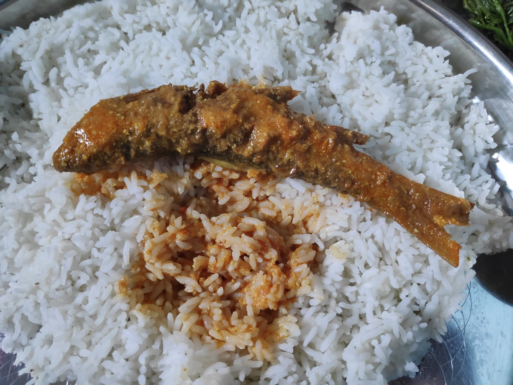

Food & dining
Local flavors and familiar choices
Taniti currently has 10 restaurants plus several grocery options for visitors.
- 5 local restaurants
Mostly fish and rice. - 3 American-style restaurants
Familiar meal options. - 2 Pan-Asian restaurants
Additional international variety. - Grocery options
Two supermarkets, two smaller grocery stores, and one 24-hour convenience store.

Photo: Gaurav Dhwaj Khadka, Wikimedia Commons, CC BY-SA 4.0.